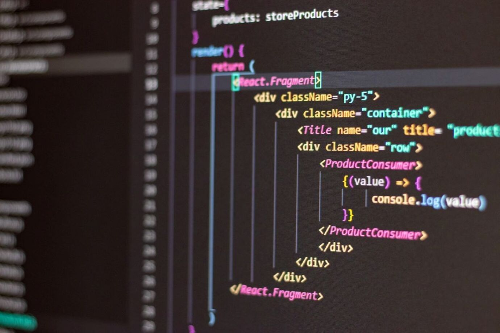

Lorenzo
SISOUVANH JANALLY
Etudiant issu d'un bac général avec pour spécialité Sciences de l'ingénieur et Mathématiques, j'ai pu découvrir une passion pour le codage et l'informatique durant ces années de lycée. C'est donc pourquoi je suis aujourd'hui en BTS SIO afin d'acquérir et d'utiliser toutes mes connaissances.
Le BTS SIO (Service Informatique aux Organisations) est un programme de niveau Bac+2, qui forme des informaticiens aussi bien doués pour le développement que pour l'administration et la maintenance d'un réseau informatique.
Durant 6 semaines de ma première année, j'ai effectué un stage ou j'ai reconditionné des parcs informatiques et les remettre en service.
Après mon BTS, j'envisagerais d'entamer une licence en 3e année pour ensuite faire un master développement web.

Projet 2 : Programme d'un algorithme qui permet de faire fonctionner un petit transpalette qui permet de déplacer une palette d'un point A à un point B.

Projet 3 : A venir, pour la 2e année.
PROJET
Mes projets
En première, j'ai développé un programme permettant à un robot de suivre une ligne grâce à des capteurs de mouvement. En terminale, j'ai conçu un système pour déplacer un petit transpalette et transporter une palette d'un point A à un point B. Durant mon année de BTS SIO, j'ai réalisé un projet principal, appris plusieurs langages de programmation, et simuler divers projets.